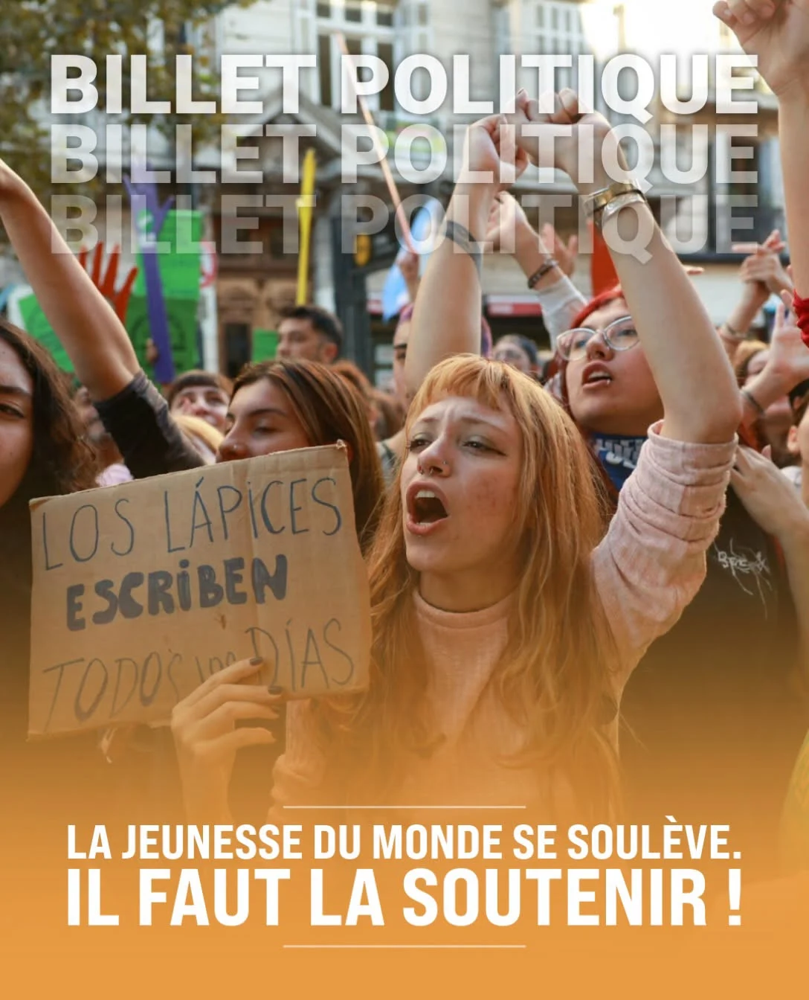

Publication relayée par le PCF 79
Fabien Gay sur les mobilisations de la jeunesse
Date indiquée par Facebook · 4 novembre 2026
Texte de la publication · Fabien Gay
En France, la mobilisation de la jeunesse fait la Une des médias. Des lycées aux universités, de Paris à la métropole et à l’Outre-mer, les élèves sont dans la rue, ils s’organisent, bloquent leurs établissements et manifestent pour des conditions d’étude dignes. Leur quotidien est très éloigné, les chances ne sont pas les mêmes, mais ils sont solidaires, ils savent que le climat environnement et social se dérègle.
Ils demandent des professeurs devant chaque classe, des bâtiments salubres, l’égal accès à l’université. Et ce n’est pas la lune !
Mais il faut voir ce mouvement à l’échelle internationale : partout où les forces réactionnaires s’allient, se déploient, où elles semblent partout gagner du terrain, la jeunesse se bat.
Retrouvez l’intégralité de mon billet d’humeur en commentaire ⤵️
Repères éditoriaux
Nous relayons le billet de Fabien Gay sur la jeunesse mobilisée. Il revient sur les conditions d’étude, les besoins en enseignants et l’égalité d’accès à l’université.

Sources
Fabien Gay · fil Facebook · relais du PCF 79 · FB-1458520733127842
À lire aussi · Le PCF place la paix au cœur de son appel au 1er mai